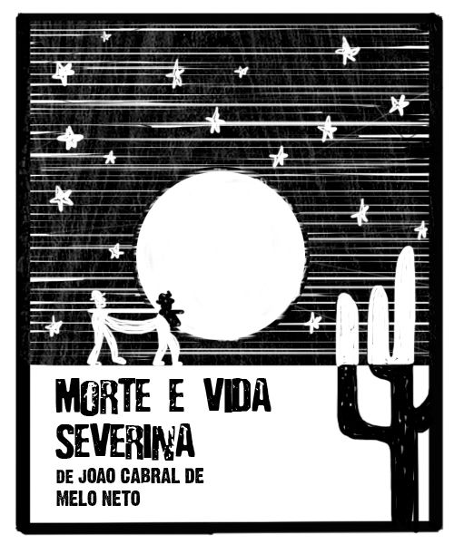
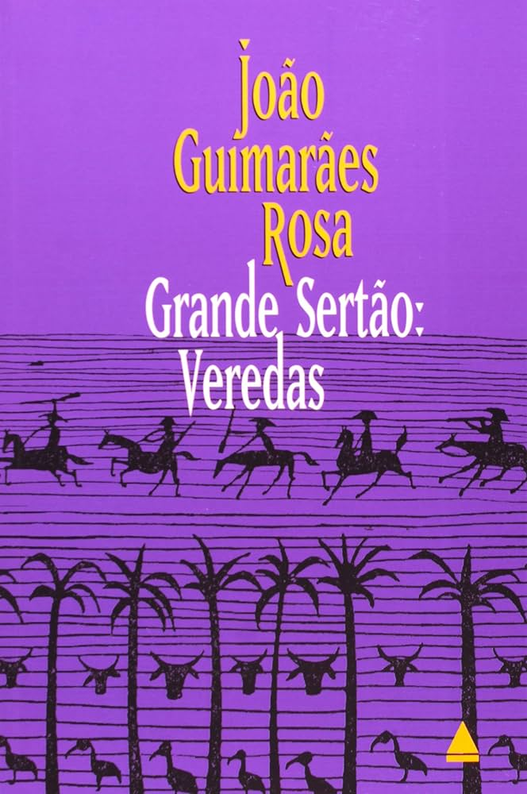
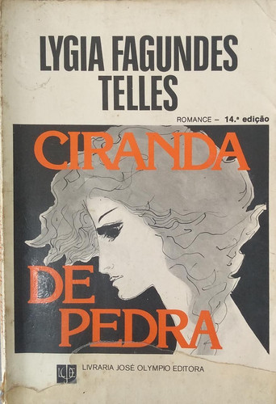

Morte e Vida Severina
Morte e Vida Severina é um livro de poema regionalista do escritor brasileiro João Cabral de Melo Neto, escrito entre 1954 e 1955 e publicado em 1955.
O enredo mostra Severino deixando o sertão rumo ao litoral, em busca de uma vida melhor. No caminho, ele vai encontrando outros moradores do sertão nordestino que, como ele, também estão sofrendo diante do esquecimento que o local recebe do Estado e das autoridades, principalmente a população pobre.
Grande Sertão: Veredas
Grande Sertão: Veredas é um romance experimental escrito por João Guimarães Rosa e publicado em 1956.
Conta a história de amor entre Riobaldo e Diadorim. O ex-jagunço Riobaldo relata, para um interlocutor não nomeado na obra, fatos de sua juventude em meio a um bando de jagunços.
A Hora da Estrela

É um romance literário da escritora Clarice Lispector, publicado em 1977.
O romance narra a história da datilógrafa alagoana, Macabéa, que migra para o Rio de Janeiro, tendo sua rotina narrada por um escritor fictício chamado Rodrigo S.M.
Ciranda de Pedra
Ciranda de Pedra é um livro de Lygia Fagundes Telles, publicado em 1954
Narra a história de uma família de classe média abalada em seus alicerces pela loucura, pela paixão e pela morte.